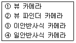

사진기능사 (2003-10-05 기출문제)
1과목: 사진일반
1. 색의 3속성 중에서 인간의 눈이 가장 예민한 감각을 갖고 있는 것은?
- 명도
- 색상
- 채도
- 순도
(정답률: 75%)

2. 감색법 혼합으로 옳은 것은?
- Yellow +× Cyan = Green
- Yellow + Magenta = Blue
- Magenta + Cyan = Red
- Yellow + Magenta + Cyan = White
(정답률: 74%)
3. 색지각(色知覺, color perception)에 있어서 빛은 필수 조건이다. 빛에 대한 설명 중 올바른 것은?
- 뉴톤(Newton)은 빛의 파동설(波動說)을 주장 하였다.
- 보통 빛이라고 하는 것은 380㎚ - 780㎚의 가시광선(可視光線)을 말한다.
- 빛의 파장(波長)이 짧을수록 굴절률(屈折率)이 적다.
- 호이겐스(Huygens)는 빛의 광입자설(光粒子說)을 주장하였다.
(정답률: 69%)
4. 현상처리폐액에 의한 수질의 오염을 측정하는 방법으로서 BOD측정 방법을 사용할 때 어느 것이 적합한가?
- BOD치가 낮을수록 좋다.
- BOD치가 높을수록 좋다.
- BOD치가 4ppm 정도가 가장 적당하다.
- BOD치는 7ppm 정도가 가장 좋다.
(정답률: 54%)
5. 다음 광원 또는 조명의 설치에 대한 설명 중 틀린 것은?
- 조명설치시에 빛을 모아서 한방향으로 가게 하는 것이 효율적이다.
- 광원이 작을수록 빛은 부드러워진다.
- 빛의 특성은 대개 광원의 크기에 의해서 결정된다.
- 크기가 작은 전구는 큰 전구보다 빛이 덜 확산된다.
(정답률: 48%)
6. 필름 사용,보관시 주의 할 점이 아닌 것은?
- 냉장 보관을 하는 것이 좋다.
- 햇볕이 있는 창가에 두는 것이 좋다.
- X-ray 검사시에는 납으로 만든 가방에 두면 안전하다
- 촬영된 필름은 가능한한 빨리 현상한다.
(정답률: 89%)
7. 다음 중 화각이 제일 넓은 Lens의 초점거리는?
- 24mm
- 50mm
- 135mm
- 200mm
(정답률: 76%)
8. 주광용 필름으로 텅스텐 광원에서 촬영하려 한다. 변환되어져야 할 mired치와 필터의 색을 다음 중에서 고른다면 가장 바람직한 것은?
- 파랑,120mired
- 파랑,60mired
- 호박색,130mired
- 노랑,80mired
(정답률: 50%)
9. 가색법에 대한 혼합으로 옳은 것은?
- Green + Red = Magenta
- Blue + Red = Cyan
- Green + Blue = Cyan
- Blue + Red + Green = Black
(정답률: 91%)
10. 컬러사진에 희미한 노란색이 전체적으로 도는 가장 큰 이유는?
- 정착액의 농도가 세다.
- 정착액이 피로해졌다.
- 현상시간이 길다.
- 현상액의 농도가 약하다.
(정답률: 54%)
11. 사진유제에 대한 설명이다. 맞지 않는 것은?
- 사진유제는 할로겐염에 질산은을 더해서 브롬화은, 염화은, 요드화은을 만들며 이중 요드화은이 가장 감도가 높다.
- 할로겐염과 질산은의 혼합시 온도, 교반조건 등에 따라 감도와 콘트라스트를 조절할 수 있다.
- 혼합이 빠르면 입자가 작고 입자수가 많아진다.
- 본래의 유제는 청색광 부분에만 민감하므로 다른 파장에도 반응하도록 분광증감을 시켜야 한다.
(정답률: 53%)
12. 중간 정지에 관련된 설명이다. 적당치 않은 설명은?
- 필름 또는 인화지상에 남아있는 현상약을 중화시킨다.
- 물로 중간정지를 대신할 경우 아무런 지장이 없다.
- 지시 정지액 중 수명이 다했을 경우 노란색이 엷은 보라색으로 바뀐다.
- 중간정지는 정착제의 수명을 연장시키는 역할도 한다
(정답률: 79%)
13. 컬러 네거티브 인화시 인화지에서 파랑(Blue)색이 많이 보여진다면 가장 올바른 수정방법은?
- Yellow필터의 첨가
- Yellow필터의 삭감
- Cyan+Magenta필터의 삭감
- Magenta필터의 삭감
(정답률: 38%)
14. 다음 설명 중 틀린 것은?
- 고스팅-태양광과 같은 강한 광선이 사진상에 포함된 경우 조리개 모양의 이미지가 형성되는 현상
- 플레어-렌즈 앞쪽 표면에 부딪친 밝은 빛이 렌즈안에서 흩어지며 전체적으로 뿌연 이미지를 만드는 현상
- 비네팅-필터나 렌즈후드를 잘못 사용한 경우 촬영된 화면의 사각 모서리가 등글게 어두워 지는 현상
- 이레디에이션-필름유제에 닿은 빛이 필름베이스에서 다시 반사를 일으켜 원치 않는 부분까지 감광 시키는 현상
(정답률: 63%)
15. 컬러 슬라이드 필름에서 1/10초 보다 긴 노출시간을 권장하는 필름의 유형은?
- A타입
- B타입
- L타입
- S타입
(정답률: 72%)
16. 청색에서 적색광역 전부를 감광역으로 하는 전가시광선에 감광되는 감광재료는?
- 레귤러형
- 오르토형
- 팬크로매틱형
- IR형(적외선)
(정답률: 35%)
17. 정지액(Stop Bath)으로 일반적으로 사용되는 약품은?
- 염산(HCl)
- 질산(HNO3)
- 빙초산(CH3COOH)
- 황산(H2SO4)
(정답률: 85%)
18. 현상액의 현상주약으로 사용되는 것이 아닌 것은?
- 메톨
- 하이드로퀴논
- 페니돈
- 아황산나트륨
(정답률: 71%)
19. 현상 주약으로 사용되는 약품으로 알칼리성이 높을수록 콘트라스트 차가 커지며 암부의 현상작용이 약하고 명부에는 강한 대표적인 완성 현상주약은?
- 메톨(metol)
- 하이드로퀴논(Hydroquinone)
- 페니돈(Phenidone)
- 수산화나트륨(NaOH)
(정답률: 69%)
20. 다음 현상액의 첨가제 중 포그방지제는?
- 메톨
- 페니돈
- 수산화나트륨
- 브롬화칼륨
(정답률: 53%)
2과목: 사진재료 및 현상
21. MQ 현상액에 비해 PQ 현상액의 장점이 아닌 것은?
- 적은 약품으로 많은 양을 처리한다.
- 콘트라스트가 강하다.
- 증감능력이 뛰어나다.
- 현상시간을 연장해도 입자가 양호하다.
(정답률: 45%)
22. 수세에 대한 설명 중 맞지 않는 것은?
- 수세시 수온은 20℃ 정도이고, 흐르는 물에 30-60분 정도가 표준이다.
- 수세속도는 현상액과 정착액과는 무관하다.
- 수세방법에는 유수법과 치환법이 있다.
- 수세의 목적은 잔류 하이포를 씻어내는데 있다.
(정답률: 71%)
23. 현상액의 산화를 방지시키며 내구성을 좋게하고 할레이션 방지층의 염료를 탈색케 해 주는 약품은?
- 보항제
- 증감제
- 촉진제
- 억제제
(정답률: 76%)
24. 노출부족이나 현상부족 등으로 필름의 농도가 옅을 때는 보력 현상법을 사용하는데 다음 중에서 보력액은?
- 과망간산칼륨
- 중크롬산칼륨
- 하이드로퀴논(Hydroquinone)
- 메톨(Metol)
(정답률: 36%)
25. 컬러리버설 필름의 현상과정 중 색을 나타내 주는 과정은?
- 제1현상(first developer)
- 표백(bleach)
- 리버설배스(reversal bath)
- 발색현상(color developer)
(정답률: 81%)
26. 컬러 네거티브 필름으로 흑백 인화시 사용되는 인화지는?
- Bromide
- gaslight
- panalure
- Ektaprint
(정답률: 42%)
27. 인화시에 프린트에 이용하는 빛의 파장을 필터로 바꾸므로서 인화지의 계조를 연조이든 경조이든 자유로이 조절할 수 있는 인화지는?
- 광택 인화지
- 반광택 인화지
- 무광택 인화지
- 가변성콘트라스트 인화지
(정답률: 74%)
28. 다음 중 불에 비교적 잘 타지 않으면서 얇고 유연성이 있어서 35㎜ 필름과 같은 롤 필름의 필름 베이스로 주로 사용되는 것은?
- 3초산 셀룰로오스(Cellulose triacetate)
- 니트로 셀룰로오스(Cellulose nitrate)
- 에스테르 베이스(Ester base)
- 폴리에틸렌(Poly ethylene)
(정답률: 23%)
29. 필름의 구성요소가 아닌 것은?
- 젤라틴
- 할로겐화은
- 아황산나트륨
- 셀룰로이드
(정답률: 58%)
30. 정착액에 대한 설명 중 잘못된 것은?
- 필름 정착액은 유제에 남아있는 할로겐화은을 제거하는 역할을 한다.
- 정착 시간을 너무 길게 해서는 안된다.
- 정착된 후에도 필름은 빛에 반응한다.
- 정착 주약은 티오황산나트륨이다.
(정답률: 65%)
31. 일안 반사식 카메라의 펜타프리즘(penta prism)이란 어떤 것인가?
- 단면이 3각형
- 단면이 4각형
- 단면이 5각형
- 단면이 6각형
(정답률: 85%)
32. 일반적으로 근접 촬영시 시차교정이 필요없는 카메라는?
- 앵글파인더를 부착한 파노라마 카메라
- 일안 반사식 카메라
- 이안 반사식 카메라
- 거리계 연동식 카메라
(정답률: 79%)
33. 일반 카메라와 비교하여 대형 카메라에 대한 설명 중 틀린 것은?
- 휴대가 불편하다.
- 조작이 간편하다.
- 화상의 선예도를 확보 할 수 있다.
- 삼각대가 필요하다.
(정답률: 93%)
34. 대형카메라에서 렌즈면이나 초점면을 좌우 또는 상하로 평행 이동시켜 화면조정을 할 수 있는 기능을 소형 카메라에 사용하기 위하여 만든 렌즈는?
- 반사렌즈(Mirror Lens)
- 줌렌즈(Zoom Lens)
- 마이크로렌즈(Micro Lens)
- 시프트렌즈(Shift Lens)
(정답률: 76%)
35. 라이카판 소형카메라에 사용되는 표준렌즈의 초점거리는 일반적으로 몇 ㎜인가?
- 35㎜
- 40㎜
- 50㎜
- 60㎜
(정답률: 58%)
36. 중형카메라에 사용되는 표준렌즈의 초점거리는 일반적으로 몇 ㎜ 인가?
- 40-45 ㎜
- 50-55 ㎜
- 60-65 ㎜
- 75-80 ㎜
(정답률: 48%)
37. 일반 형광등 조명하에서 주광용 컬러필름을 사용하여 촬영할 때 형광등 특유의 스펙트럼의 영향으로 화상이 녹색을 띠는데 이때 색조정을 위해 필요한 필터는?
- FL
- PL
- SL
- GY
(정답률: 69%)
38. 가장 빠른 셔터를 구사할 수 있는 것은?
- 렌즈 셔터
- 포컬플레인 셔터
- 돈톤 셔터
- 셀프타임
(정답률: 65%)
39. 200㎜ 망원렌즈의 경우 가장 안정된 셔터 속도는?
- 1/30 초
- 1/60 초
- 1/80 초
- 1/250 초
(정답률: 67%)
40. 일반적으로 화면의 대각선의 길이와 같은 초점거리의 렌즈는?
- 광각 렌즈
- 표준 렌즈
- 어안 렌즈
- 망원 렌즈
(정답률: 91%)
3과목: 사진기계 및 촬영
41. 카메라에 주광용(day light type) 필름을 넣고 촬영할 때 조명등의 색온도는 어느 정도가 가장 적당한가?
- 3200 - 3400 K
- 4200 - 4400 K
- 5500 - 6000 K
- 700 - 900 K
(정답률: 83%)
42. 특히 컬러사진 촬영에서 조명램프의 선택상 가장 유의하여야 할 점은?
- 전압
- 광량
- 색온도
- 조사각도(照射角度)
(정답률: 71%)
43. 릴리즈(Release)는 특히 어떤 경우에 필요한가?
- 소형카메라
- 중형카메라
- 저속도셔터
- 고속도셔터
(정답률: 74%)
44. 링 스트로보(Ring strobo)의 가장 큰 특성은?
- 반사광의 효과를 살린다.
- 이중그림자를 형성한다.
- 부드러운 빛으로 바꾸어 준다.
- 피사체 그림자를 없애 준다.
(정답률: 60%)
45. 노출계는 몇 %의 반사율을 기준으로 하는가?
- 18%
- 20%
- 25%
- 50%
(정답률: 100%)
46. 조명광원과 피사체와의 거리가 1m 일 때 적정 노출이 1/60초, f/16이었다면, 광원의 거리를 4m로 하였을 때 1/60초에서 조리개값을 어떻게 변화시켜야 적정 노출이 되겠는가?
- f/4
- f/5.6
- f/8
- f/11
(정답률: 62%)
47. 사진의 화면에서 선의 작용에 대한 설명 중 수직선에 해당하는 것은?
- 단순, 정연, 냉정, 유연, 운동, 견실을 나타낸다.
- 장엄, 견실, 냉정, 높이, 깊이를 나타낸다.
- 광막, 안정, 풍부, 평온, 정적을 나타낸다.
- 이 선은 보통 화면에서 불안한 느낌을 주기 때문에 동적인 느낌을 나타낼 때 이용된다.
(정답률: 66%)
48. 필름의 감도 ISO 100/21°에서 셔터스피드가 1/250, 조리개값이 f/8일 때 EV값은?
- 10
- 11
- 13
- 14
(정답률: 42%)
49. 피사체의 움직임에 따라 카메라를 함께 움직이면서 촬영하기에 가장 적합한 방법은?
- 조리개 개방
- 고감도 필름사용
- 패닝기법 사용
- 고속 셔터사용
(정답률: 90%)
50. 피사체의 색깔이 적색(Red)인데 컬러 네거티브 필름(color negative film)을 사용하여 촬영하고 현상하였다. 네거티브 필름상에 나타난 피사체의 색상은?
- 적색(Magenta)
- 노랑색(Yellow)
- 청색(Cyan)
- 녹색(Green)
(정답률: 61%)
51. 현상약품 저장 용기로서 가장 적당하지 못한 것은?
- 갈색병
- 뚜껑이 있는 것
- 가능한 큰 용기로서 직육면체 모양
- 약품량에 따라 저장용기의 부피조절이 가능한 것
(정답률: 94%)
52. 피사계 심도에 영향을 주지 않는 것은?
- 피사체와의 거리
- 렌즈 구경
- 렌즈의 초점거리
- 셔터스피드의 변화
(정답률: 66%)
53. 입사식 노출계를 사용하는 곳으로 가장 좋은 곳은?
- 야외 풍경사진 촬영
- 실내 스튜디오 촬영
- 망원렌즈를 사용할 때
- 광각렌즈를 사용할 때
(정답률: 70%)
54. 다음 중 렌즈를 통해서 보고 초점을 맞추는 카메라 끼리만 묶여진 것은?

- ①,②,③
- ②,③,④
- ③,④
- ①,④
(정답률: 63%)
55. 사진촬영을 하기 위한 빛의 측정시 염두에 두어야 할 사항과 가장 거리가 먼 것은?
- 광원이 발출하는 빛의 전체량
- 피사체 표면에 닿는 빛의 강도
- 피사체 표면에 닿는 빛의 양 및 거리
- 피사체로부터 반사된 빛의 강도
(정답률: 19%)
56. 플래시의 가이드 넘버가 39일 때, 촬영거리가 7m라면 조리개 값은?
- f/4
- f/5.6
- f/8
- f/11
(정답률: 92%)
57. 다음 확대기 중 필름의 입자와 흠이 잘 나타나고 확대용 램프의 가열로 인해 필름이 손상되기 쉬운 방식의 확대기는?
- 집광식
- 산광식
- 반사광식
- 집산광식
(정답률: 69%)
58. 가이드 넘버를 알아내는데 필요한 요소가 아닌 것은?
- 피사체와의 거리
- 조리개 수치
- 필름의 감도
- 피사체의 반사율
(정답률: 56%)
59. 35mm필름을 확대할 때 사용하는 확대렌즈의 초점거리는?
- 45~63mm
- 75~80mm
- 90~1⑤mm
- 135~165mm
(정답률: 71%)
60. 카메라 내부에 설치된 센서로 측광하여 플래시 광량을 조절하는 방식을 무엇이라고 하는가?
- TTL 측광 방식
- AUTO FLASH 방식
- MANUAL 방식
- NON FLASH 방식
(정답률: 83%)